Beijing Institute of Technology北京理工大学
B.S. Cyberspace Science
Top 1% · Xu Teli Scholarship网络空间安全 本科
前 1% · 徐特立奖学金
杜恩俊
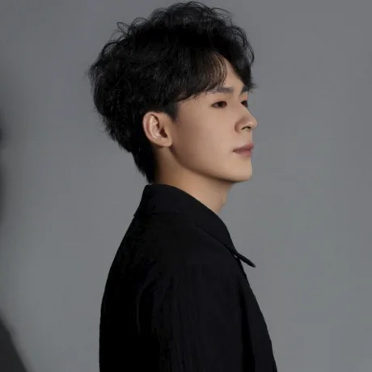
← → or swipe to navigate · F full screen · L 中文 ← → 或滑动翻页 · F 全屏 · L English
I study how models understand video, audio and images — and how they can show the evidence behind every answer.我关注模型如何理解视频、音频与图像，并让每一个回答都能给出可核验的证据。
Interests: video understanding, video generation and world models.研究兴趣：视频理解、视频生成、世界模型。
B.S. Cyberspace Science
Top 1% · Xu Teli Scholarship网络空间安全 本科
前 1% · 徐特立奖学金
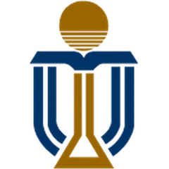
Visiting Research Scholar
with Prof. Yongqi Zhang访问研究学者
导师 张永祺
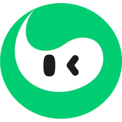
Multimodal Algorithm Group
Research Intern · EviRank, MARS多模态算法组 研究实习生
多模态检索 · EviRank、MARS
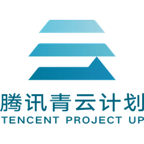
LightSpeed · Research Intern
Streaming omni-modal video光子学习发展组 研究实习生
流式全模态视频理解
PhD, Computing & Data Science
with Prof. Difan Zou计算与数据科学 博士
导师 Difan Zou
Highest honor at Beijing Institute of Technology · RMB 50,000北京理工大学最高荣誉 · 5 万元
China's highest undergraduate honor · top 0.2%本科生最高荣誉 · 前 0.2%
Also Outstanding Graduate of Beijing Institute of Technology同时获评北京理工大学优秀毕业生
The only one in the college · First-Class Scholarship ×2, Second-Class ×3全院唯一 · 校一等奖学金 ×2、二等奖学金 ×3
One question across six papers: can a model show the evidence behind each decision?六篇论文，同一个问题：模型能否为每一个决策给出可核验的证据？
Explicit paths and relations make reasoning inspectable.显式的路径与关系，让推理过程可解释。
Relevance becomes required, forbidden and ignorable evidence.相关性被拆解为“必须 / 禁止 / 可忽略”的证据。
Agent trajectories become ledgers of verified claims.智能体轨迹变成可审计的证据账本。
Claims made on a live audio-visual stream stay open until later evidence confirms or refutes them.在实时音视频流上做出的判断保持“待定”，直到后续证据确认或否定它。
Under bounded memory, a plausible visual guess can become a working fact before the audio settles it — premature cross-modal commitment.在有限的记忆里，一个看似合理的视觉猜测，可能在音频给出定论之前就被当作事实——即过早的跨模态承诺。
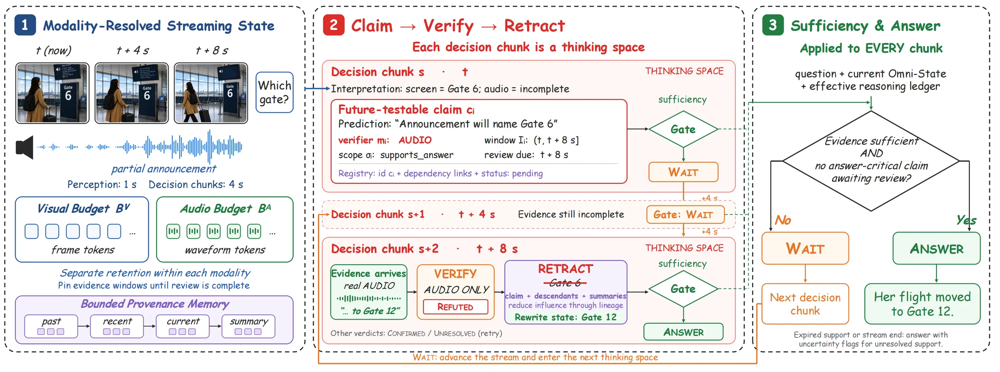
Sparse audio is never evicted by dense frames; evidence windows stay pinned until review.稀疏的音频不会被密集的画面挤出；证据窗口在复核完成前保持固定。
Each guess records a prediction, a verifying modality and a review window, then meets real evidence from that modality.每个猜测都记录预测内容、验证模态与复核窗口，到期后用该模态的真实证据检验。
Refuted claims lose influence through recorded dependencies; the answer waits while any answer-critical review is open.被否定的声明沿记录的依赖链削弱影响；只要关键复核未完成，答案门控就保持等待。
510 matched groups hold the video fixed while the audio is kept, muted, swapped or mixed — plus 510 reviewed subtitle-versus-speech CLASH items.510 组匹配样本固定画面，只把音频保留、静音、替换或混合；另有 510 条人工审核的字幕-语音冲突（CLASH）样本。
“a guitar being played”
“a guitar being played is heard”
“a dog barking in the background”
“a guitar being played”
Quotes are Qwen2.5-Omni-7B (offline) on one guitar clip — CLEAN accuracy alone hides both failures. Click a clip to listen.引号内为 Qwen2.5-Omni-7B（离线）在同一段吉他视频上的回答——只看 CLEAN 准确率，两类错误都会被掩盖。点击视频可试听。
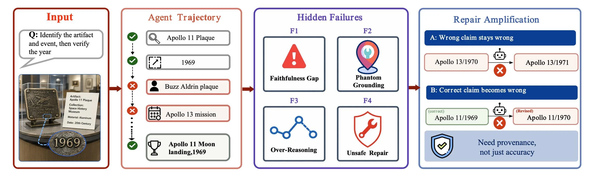
The answer is right, but intermediate claims lack evidence.答案正确，但中间论断缺少证据支撑。
A claim cites evidence that does not contain its entity or number.论断引用了证据，但其中的实体或数字并不在证据里。
Unneeded tool calls overwrite a simple, correct answer.不必要的检索与推理，覆盖了原本正确的简单答案。
Free-form self-repair fixes one error and introduces another.自由形式的自我修复改对一处，又引入新的错误。
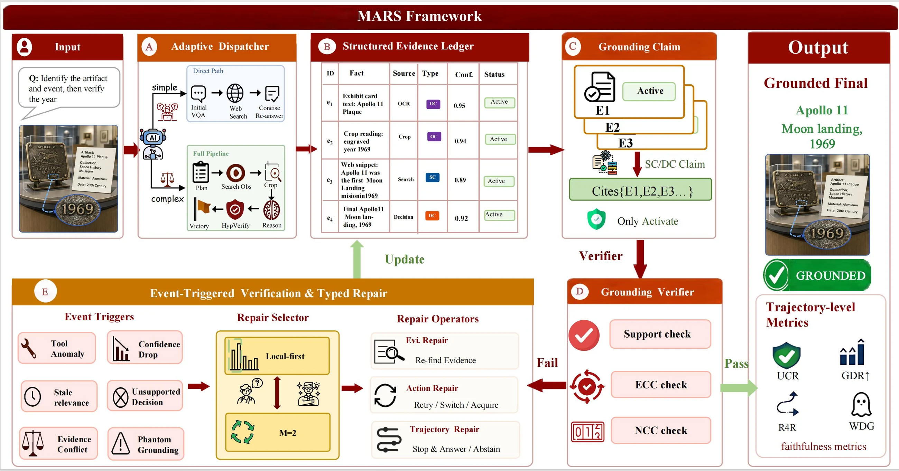
Each tool output is a typed entry with source, confidence, TTL and status; claims cite only active entries.每个工具输出记为带来源、置信度、TTL 与状态的条目；论断只能引用有效条目。
Claims must pass support coverage, entity consistency and numeric coherence.论断须通过支撑覆盖、实体一致性（ECC）与数值一致性（NCC）检查。
Simple queries go direct; failures trigger typed repairs only, so repair never invents evidence.简单问题走直连路径；失败只触发类型化修复，修复不会凭空制造证据。
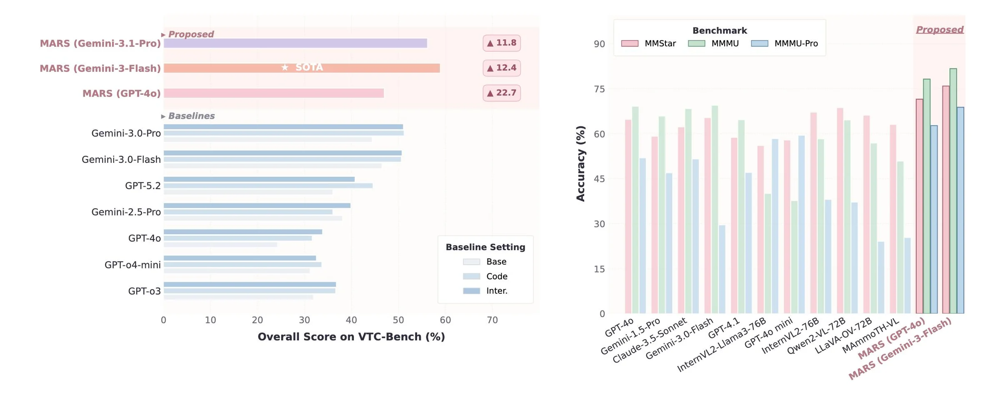
MARS lifts every backbone on VTC-Bench; with Gemini-3-Flash it sets the state of the art (▲12.4).MARS 在 VTC-Bench 上提升了每一个骨干模型；搭配 Gemini-3-Flash 达到 SOTA（▲12.4）。
“This shirt, in pink”: keep the style, change one attribute, ignore the background.“这件衬衫的粉色款”：保留款式、改变一个属性、忽略背景。
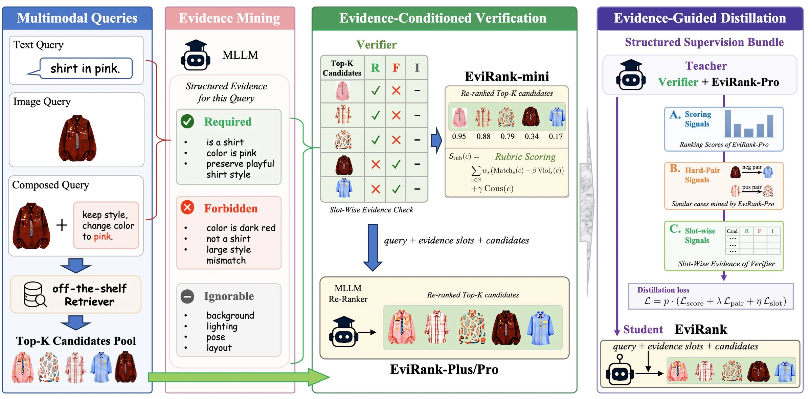
Typed criteria over 6 slots: entities, attributes, actions, relations, scene, key details.覆盖 6 个语义槽：实体、属性、动作、关系、场景、关键细节。
Slot-wise rubric scores, then evidence-grounded listwise refinement on any retriever.先按槽位打分，再做基于证据的列表式精排，可接在任意检索器之后。
A light student learns from these signals and needs only raw inputs at test time.轻量学生模型从这些信号中学习，推理时只需原始输入。
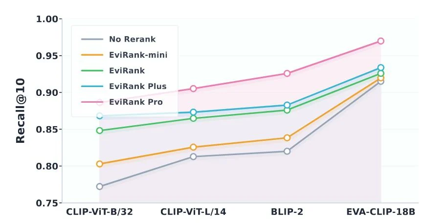
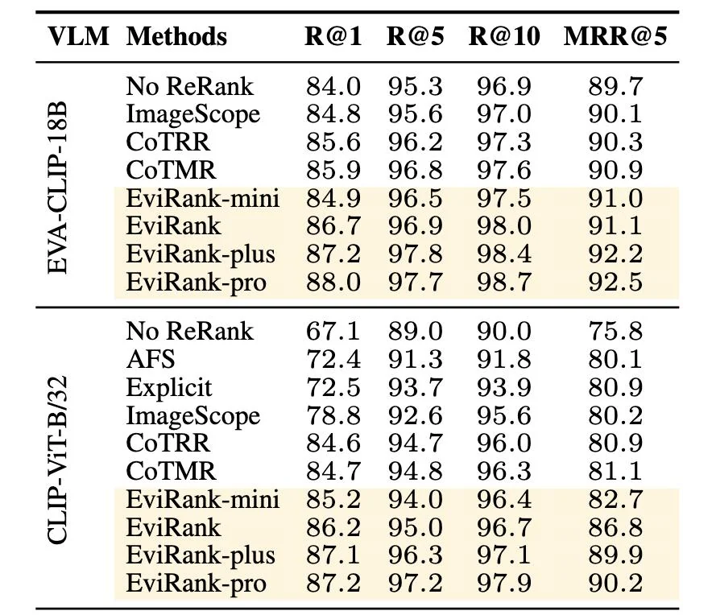
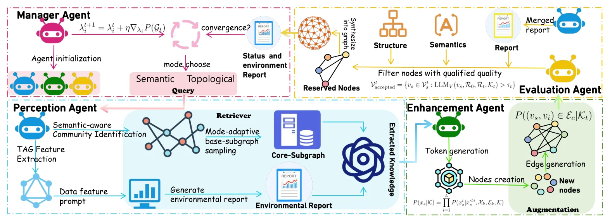
Four LLM agents — manager, perception, enhancement, evaluation — synthesize text-attributed graphs when data is scarce.管理、感知、增强、评估四个 LLM 智能体协作，在数据稀缺时合成文本属性图。
Project page ↗项目主页 ↗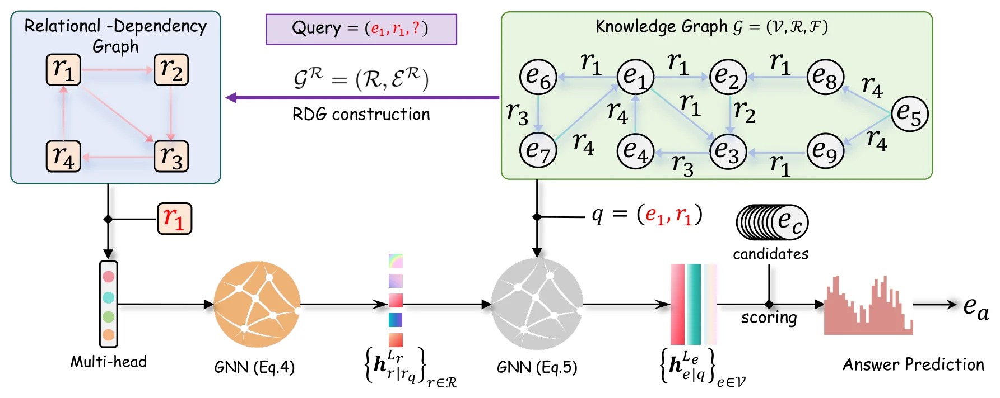
Relation-dependency graphs let one KG foundation model transfer across domains: pre-trained on 3 KGs, fine-tuned for 2 epochs on 31 datasets.关系依赖图让一个知识图谱基础模型跨域迁移：在 3 个 KG 上预训练，于 31 个数据集上仅微调 2 个 epoch。
Project page ↗项目主页 ↗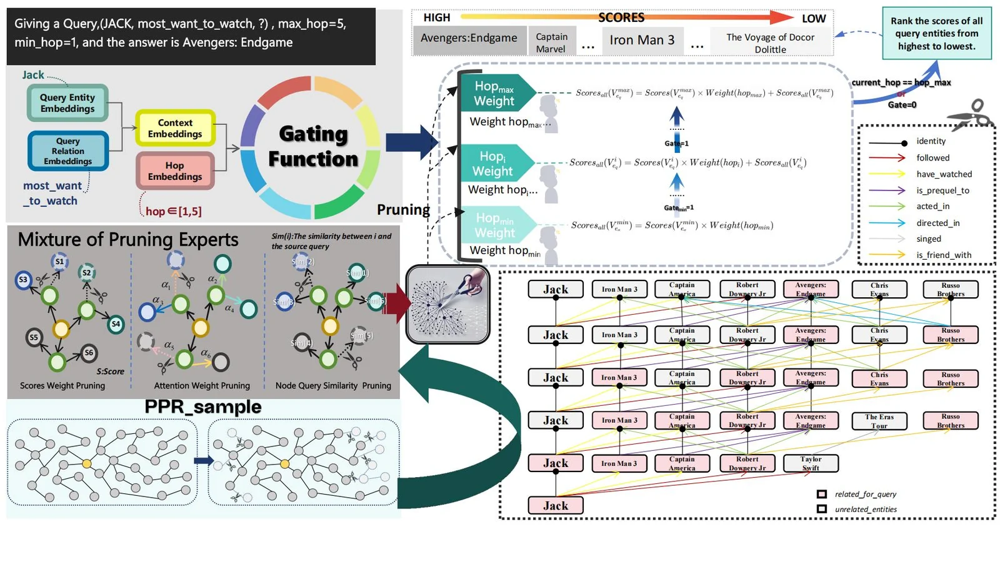
Personalized path exploration: length experts choose reasoning depth per query; pruning experts keep the most informative paths.个性化路径探索：长度专家按查询选择推理深度，剪枝专家从互补视角保留信息量最大的路径。
Project page ↗项目主页 ↗Looking for research internships in video understanding, video generation and world models.希望在视频理解、视频生成与世界模型方向开展研究型实习。
Available for a stable, full-time internship of more than a year.可以稳定、全职地实习一年以上。
PhD at HKU with Prof. Difan Zou, who supports full-year internships and gives academic guidance throughout.香港大学博士在读，导师 Difan Zou 支持全年实习，并在实习期间提供学术指导。
Visiting scholar at HKUST(GZ) with Prof. Yongqi Zhang — strong university–industry collaboration.香港科技大学（广州）访问学者，导师张永祺，校企合作资源丰富。
{kind=link}
{kind=link}
{kind=link}
{kind=link}
{kind=link}
{kind=link}
{kind=link}
{kind=link}
{kind=link}
{kind=link}